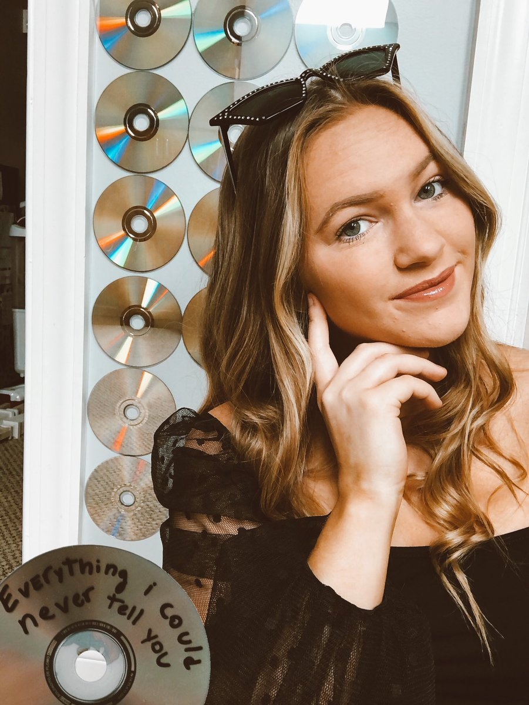

I like edit photos in fun ways to bring out the colors and make them look fun. This can be adding stickers and designs on to photos, or enhancing what is already there. Color correcting, lighting, and contrast are usually the tools that I use the most.
There are a lot of different ways to edit photos (and videos). I love being able to edit in a lot of different kinds of ways based on the task and brands. When working for Virginia Tech Rec Sports, I use very white based, corporate branded photo editing. Whereas when I edit photos for my friends, I have recently enjoyed making the photos look dated and vintage.